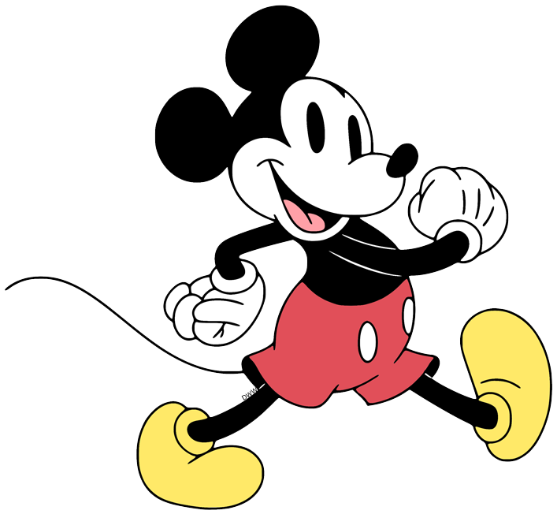

Animation Principles
Animation has definitely come a long way since its early days of hand drawn images. The advancement of computer generated imagery has revolutionized the way that animated content is created. However, even with these technological advances, the fundamental principles of animation remain as important as ever. Disney's 12 principles of animation, which were developed in the 1930s and are still used today, provide a foundation for animators to create lifelike and engaging characters through techniques such as squash and stretch, anticipation, and timing. These principles have helped to shape the industry and continue to influence animators today.
